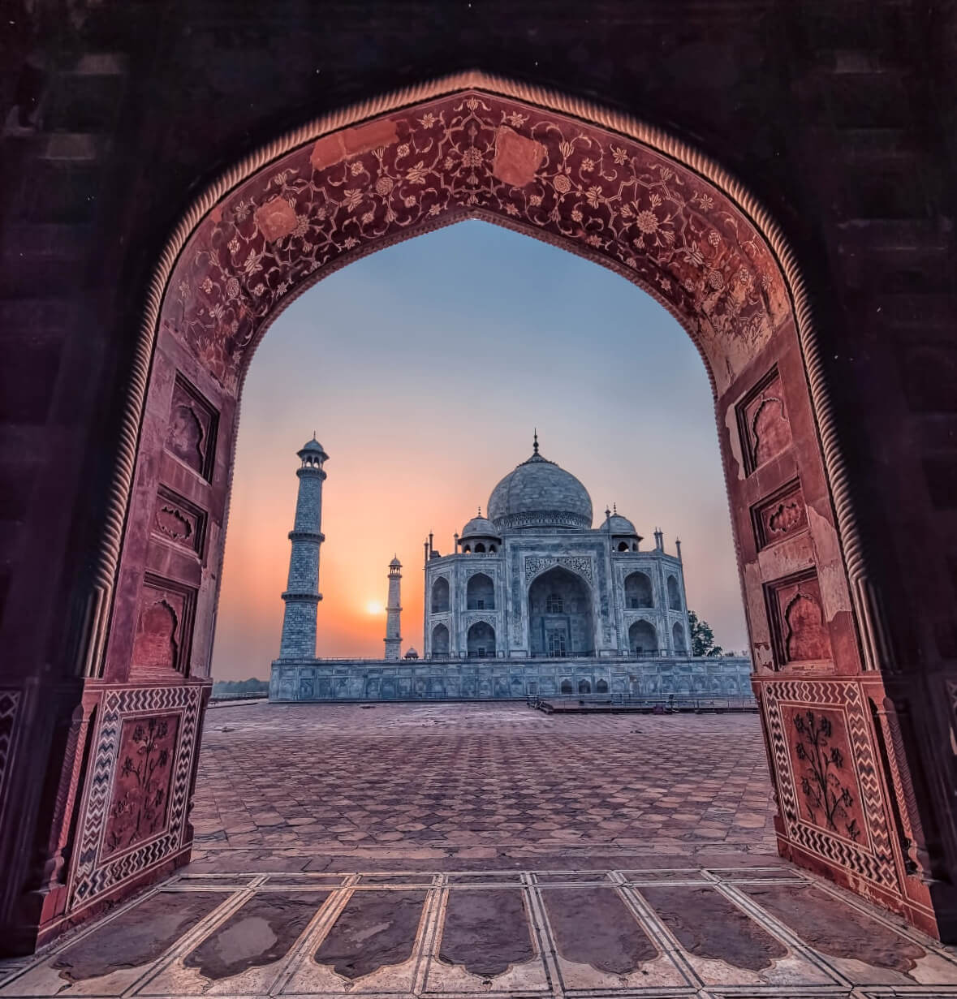

TAJ MAHAL


EIFFEL TOWER


Eiffel Tower
The Eiffel Tower is a wrought-iron lattice tower on the Champ de Mars in Paris, France. It is named after the engineer Gustave Eiffel, whose company designed and built the tower.
Locally nicknamed "La dame de fer" (French for "Iron Lady"), it was constructed from 1887 to 1889 as the entrance to the 1889 World's Fair and was initially criticised by some of France's leading artists and intellectuals for its design, but it has become a global cultural icon of France and one of the most recognisable structures in the world. The Eiffel Tower is the most-visited paid monument in the world; 6.91 million people ascended it in 2015.
The tower is 324 metres (1,063 ft) tall, about the same height as an 81-storey building, and the tallest structure in Paris. Its base is square, measuring 125 metres (410 ft) on each side. During its construction, the Eiffel Tower surpassed the Washington Monument to become the tallest man-made structure in the world, a title it held for 41 years until the Chrysler Building in New York City was finished in 1930. It was the first structure in the world to surpass both the 200 meter and 300 meter mark in height. Due to the addition of a broadcasting aerial at the top of the tower in 1957, it is now taller than the Chrysler Building by 5.2 metres (17 ft). Excluding transmitters, the Eiffel Tower is the second tallest free-standing structure in France after the Millau Viaduct.
History
The design of the Eiffel Tower is attributed to Maurice Koechlin and Émile Nouguier, two senior engineers working for the Compagnie des Établissements Eiffel. It was envisioned after discussion about a suitable centrepiece for the proposed 1889 Exposition Universelle, a world's fair to celebrate the centennial of the French Revolution. Eiffel openly acknowledged that inspiration for a tower came from the Latting Observatory built in New York City in 1853.In May 1884, working at home, Koechlin made a sketch of their idea, described by him as "a great pylon, consisting of four lattice girders standing apart at the base and coming together at the top, joined together by metal trusses at regular intervals". Eiffel initially showed little enthusiasm, but he did approve further study, and the two engineers then asked Stephen Sauvestre, the head of company's architectural department, to contribute to the design. Sauvestre added decorative arches to the base of the tower, a glass pavilion to the first level, and other embellishments.Design and Construction
The plan to build a tower 300 metres high was conceived as part of preparations for the World's Fair of 1889.The wager was to "study the possibility of erecting an iron tower on the Champ-de-Mars with a square base, 125 metres across and 300 metres tall". Selected from among 107 projects, it was that of Gustave Eiffel, an entrepreneur, Maurice Koechlin and Emile Nouguier, both engineers, and Stephen Sauvestre, an architect, that was accepted.
Emile Nouguier and Maurice Koechlin, the two chief engineers in Eiffel's company, had the idea for a very tall tower in June 1884. It was to be designed like a large pylon with four columns of lattice work girders, separated at the base and coming together at the top, and joined to each other by more metal girders at regular intervals.
The tower project was a bold extension of this principle up to a height of 300 metres - equivalent to the symbolic figure of 1000 feet. On September 18 1884 Eiffel registered a patent "for a new configuration allowing the construction of metal supports and pylons capable of exceeding a height of 300 metres".
In order to make the project more acceptable to public opinion, Nouguier and Koechlin commissioned the architect Stephen Sauvestre to work on the project's appearance.
The assembly of the supports began on July 1, 1887 and was completed twenty-two months later.
All the elements were prepared in Eiffel’s factory located at Levallois-Perret on the outskirts of Paris. Each of the 18,000 pieces used to construct the Tower were specifically designed and calculated, traced out to an accuracy of a tenth of a millimetre and then put together forming new pieces around five metres each. A team of constructors, who had worked on the great metal viaduct projects, were responsible for the 150 to 300 workers on site assembling this gigantic erector set.